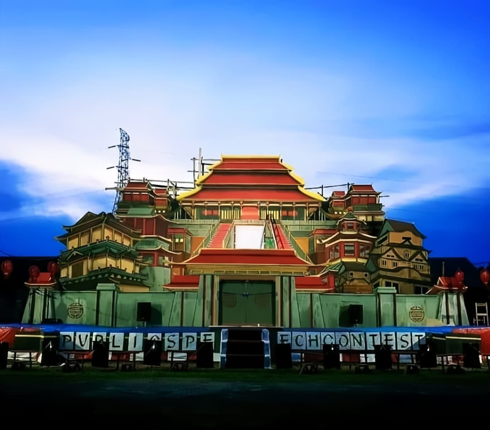
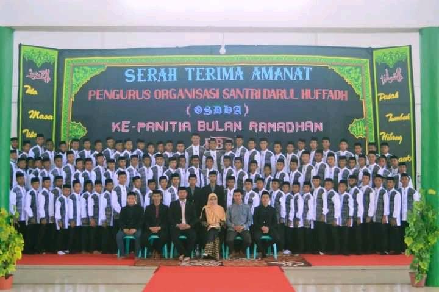
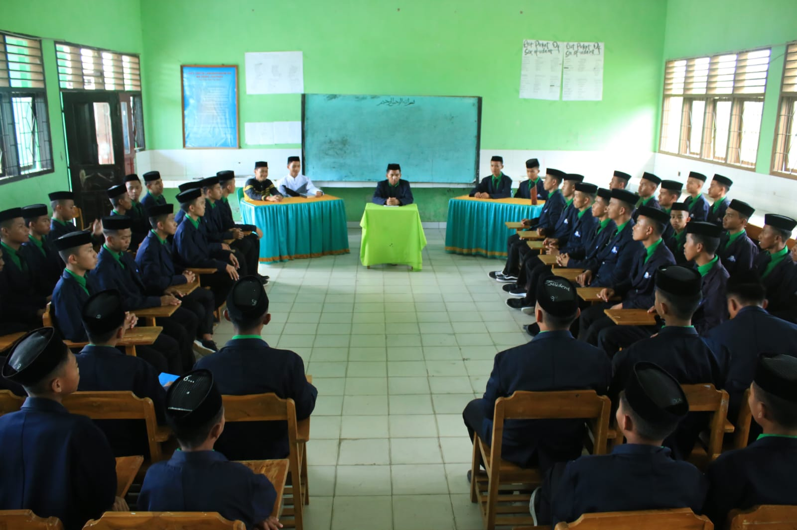
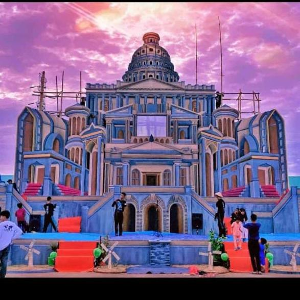

Kegiatan pengembangan bakat orasi dan kepercayaan diri santri dalam menyampaikan ide di depan publik melalui kompetisi pidato tiga bahasa.

Pengabdian santri dalam mengelola berbagai agenda ibadah, buka puasa bersama, hingga kegiatan sosial selama bulan suci Ramadan.

Wadah kepemimpinan tertinggi santri untuk belajar mengelola organisasi secara profesional dan menjaga disiplin pondok.

Pergelaran seni akbar sebagai mahakarya penutup yang menggabungkan elemen drama, tari, dan musik dari seluruh santri kelas akhir.